Transformamos conocimiento en soluciones sociojurídicas
El Centro de Investigaciones SocioJurídicas y Políticas (CISyP) del Departamento de Derecho y Ciencias Políticas de la Universidad de la Costa (CUC) promueve, dirige y coordina la investigación en ciencia, tecnología e innovación, brindando soluciones integrales a entidades públicas, organizaciones privadas y comunidades.
Casos de éxito destacados
Resultados tangibles y alianzas estratégicas del CISyP que respaldan nuestra excelencia técnica y compromiso con la gestión pública e institucional.
Proceso de Elección Contralor de Pereira
Prestación de servicios especializados para el desarrollo integral de las etapas del proceso de convocatoria pública y elección del contralor municipal de Pereira para la vigencia constitucional 2026 - 2029.
Ver casos de éxitoPotencie sus iniciativas jurídicas e institucionales
Si su organización o entidad requiere asesoría técnica, consultoría sociojurídica o acompañamiento en proyectos estratégicos, contáctese con nuestro equipo de especialistas.
Solicitar AsesoríaSobre Nosotros
¿Quiénes somos?
El Centro de Investigaciones SocioJurídicas y Políticas (CISyP) es responsable de dirigir, coordinar, promover y fortalecer la investigación en ciencia, tecnología e innovación dentro de las áreas jurídica, sociojurídica y política del Departamento de Derecho y Ciencias Políticas de la Universidad de la Costa (CUC). Su labor consiste en fomentar la implementación de las políticas de ciencia, tecnología e innovación establecidas en el Proyecto Educativo Institucional, articulándose con los diversos actores del Departamento, la comunidad universitaria y los grupos de interés.
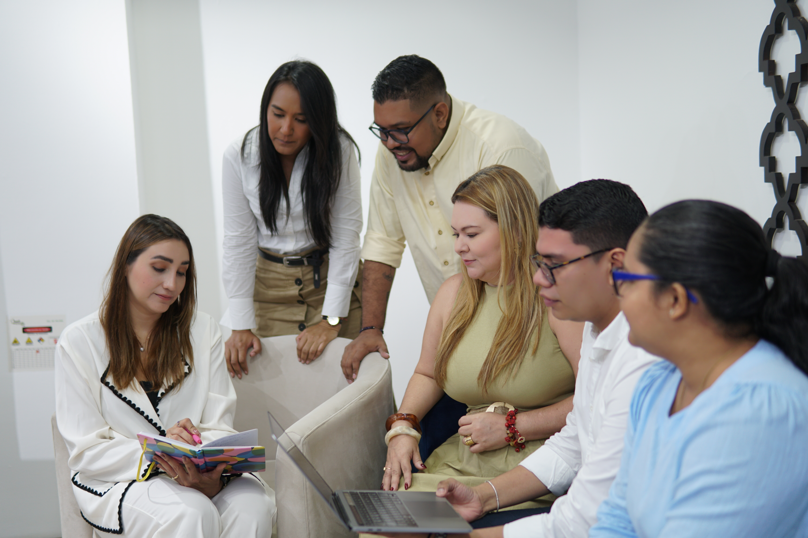
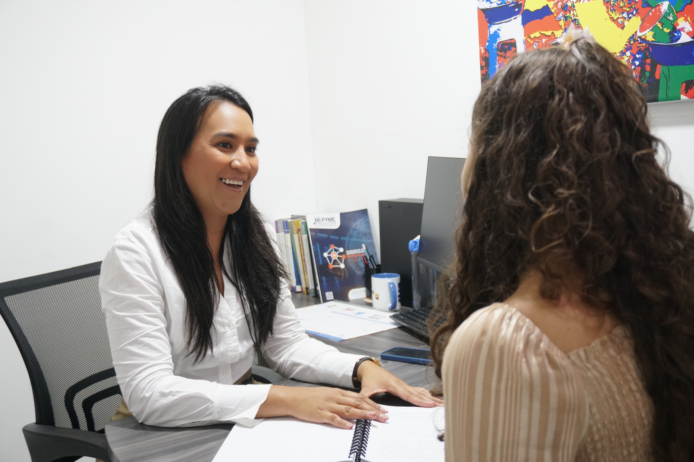
Misión y Visión
Nuestra Misión
El Centro de Investigaciones Sociojurídicas y Políticas “CISyP”, tiene como misión la formación, producción, divulgación y aplicación de conocimientos científicos en las Ciencias Juridicas y políticas, mediante la planeación, organización y promoción de la investigación disciplinar, interdisciplinar y transdisciplinar, la producción intelectual, la innovación y la apropiación social del conocimiento, que de respuesta a las necesidades de las disciplinas, el contexto socioeconómico y el desarrolo de competencias en el ámbito de la ciencia, la tecnología, el arte y la cultura.
Nuestra Visión
El Centro de Investigaciones Sociojurídicas y Políticas “CISyP”, será un centro de investigaciones en las ciencias Jurídica y Políticas reconocido por la comunidad académica nacional e internacional por sus logros investigativos que contribuyan al desarrolo sostenible de su contexto, y por su alto nivel de productividad y de participación en redes académicas y científicas.
Servicios y Portafolio
¿Qué ofrecemos?
Brindamos soluciones especializadas, asesoría técnica y formación en investigación sociojurídica y política para la comunidad académica, el sector público y organizaciones de la sociedad civil.
Servicios de Asesoría Técnica
Brindamos asesoría en gestión de la indexación de revistas y consultoría técnica en intervención en política pública derivada de procesos de investigación y extensión. Asimismo, ofrecemos asesoría técnica en la generación de productos científicos derivados de proyectos de investigación y en producción científica con visibilidad e impacto, junto con asesoría especializada para la estructuración de proyectos de Regalías.
Laboratorios Especializados
Ponemos a su disposición el Laboratorio Jurisverso para ejercicios simulados virtuales, integrando la práctica formativa en el Laboratorio de Oralidad y el soporte para la investigación experimental en el Laboratorio Cámara de Gesell.
Servicios Especializados
Ofrecemos preparación estratégica en Litigio Internacional de alto nivel, así como la atención, asesoría y acompañamiento sociojurídico integral desarrollado mediante nuestra Clínica Jurídica.
Formación en Metodología de la Investigación
Desarrollamos programas de formación en producción científica con visibilidad e impacto, apropiación social del conocimiento y enfoque diferencial para la investigación. Además, capacitamos en formulación de proyectos de desarrollo, gobernanza y políticas públicas, así como en la preparación para la presentación del Examen de Idoneidad Profesional de Abogados (Ley 1905 de 2018).
Portafolio de servicios
Explore nuestro catálogo digital interactivo para conocer a detalle las líneas de consultoría, laboratorios y oferta formativa del CISyP o descargue el documento oficial en formato PDF.
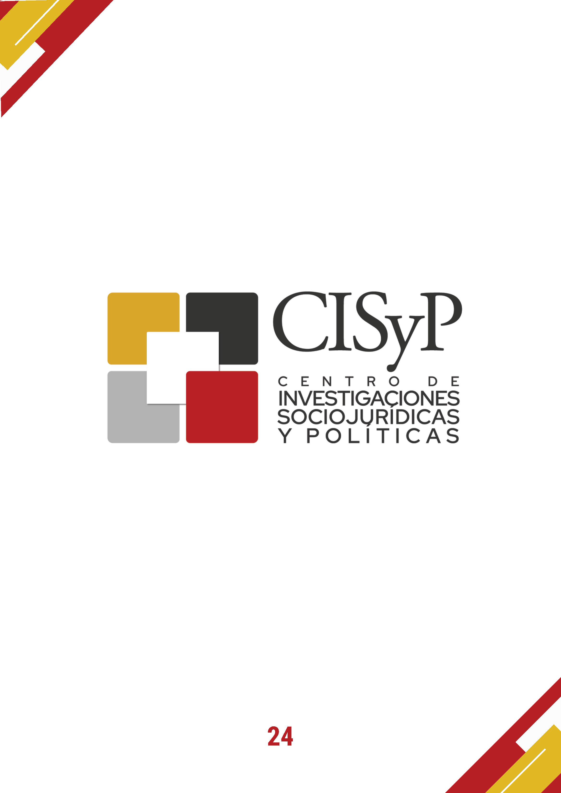
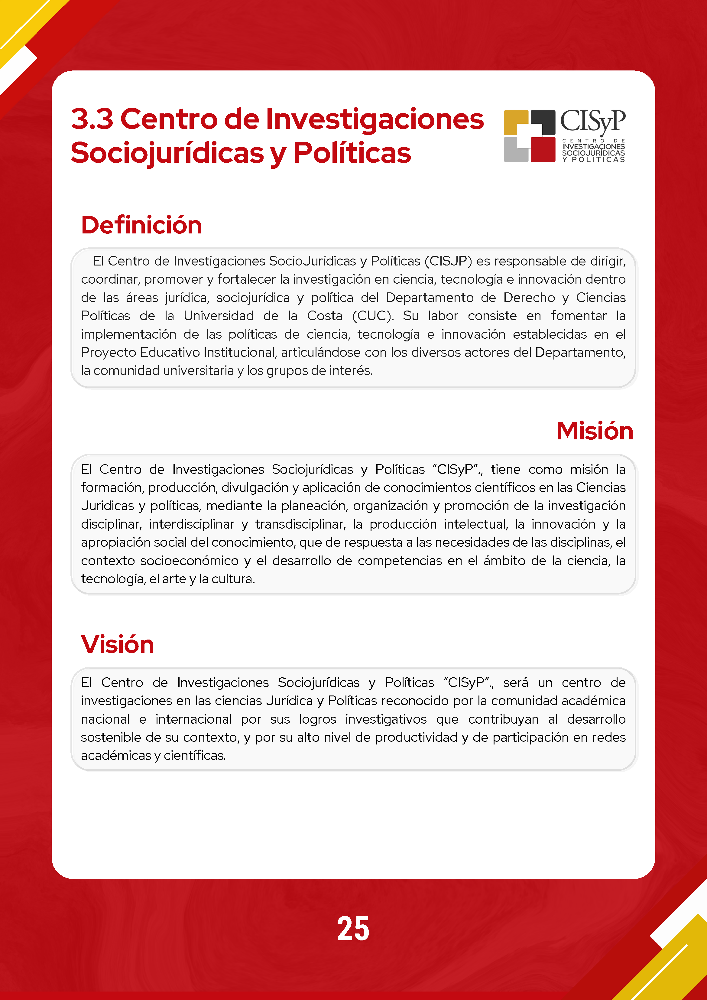
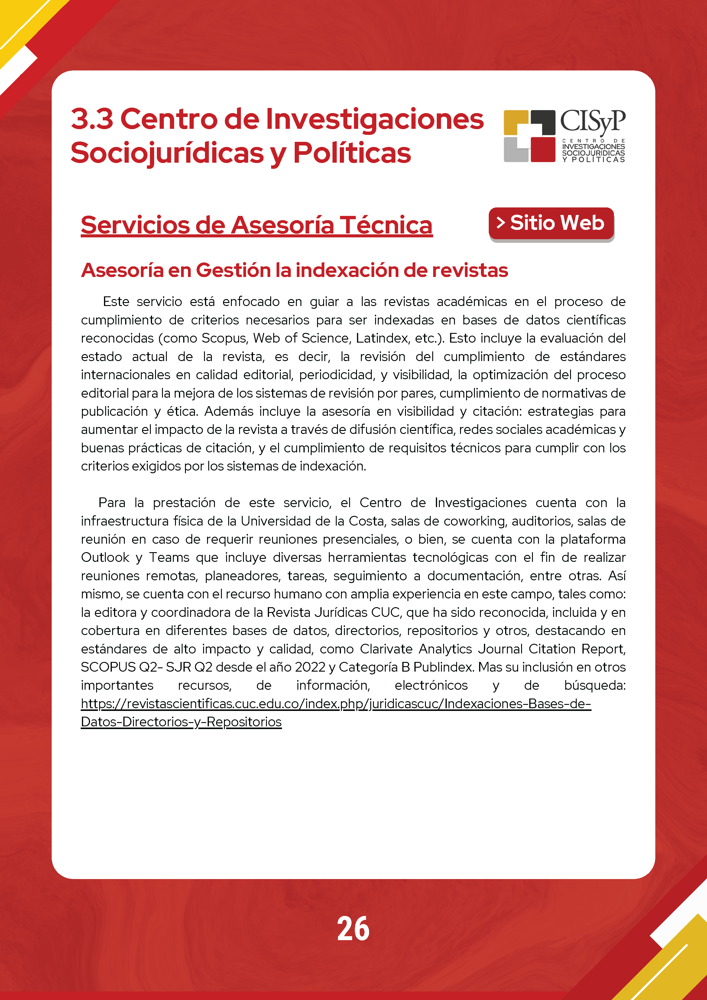
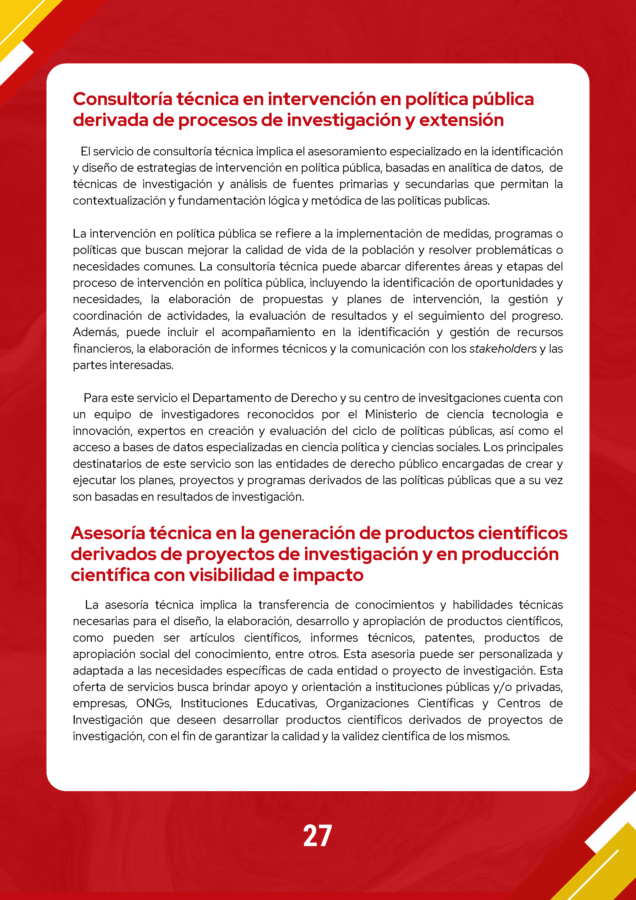
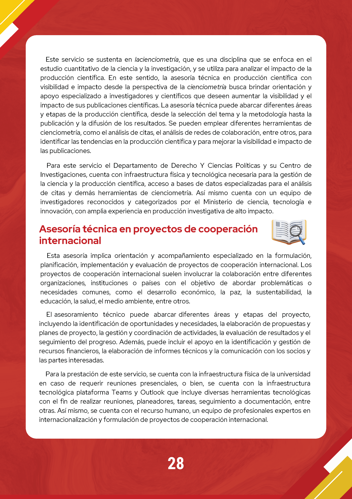
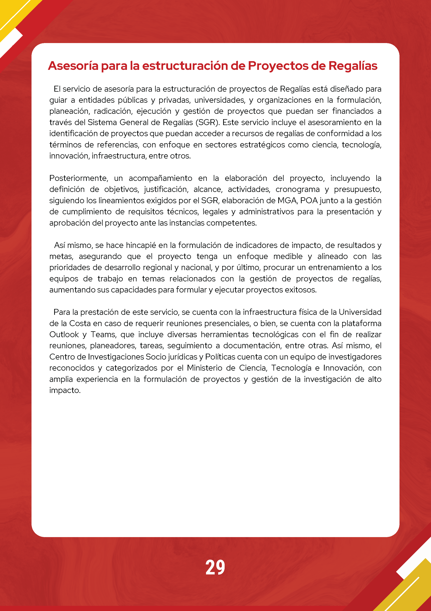
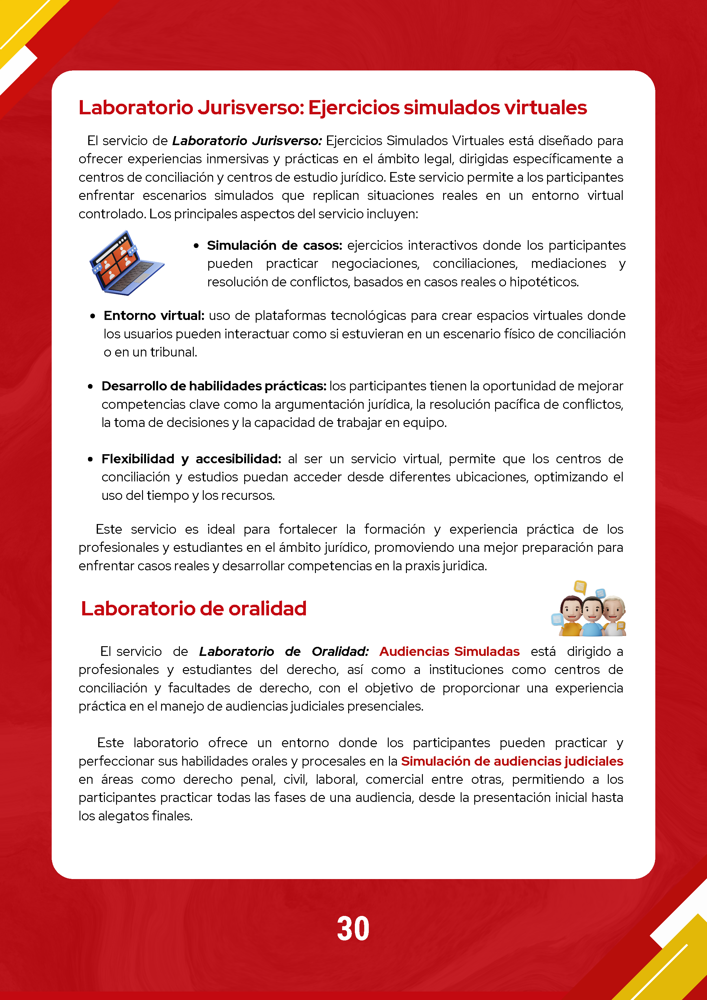
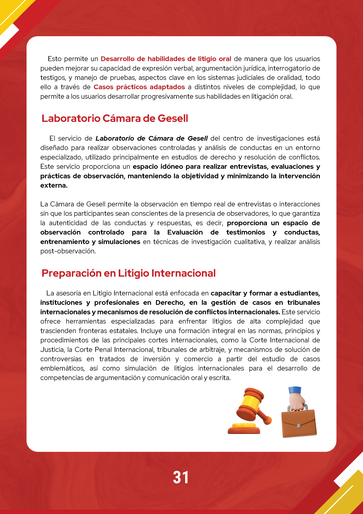
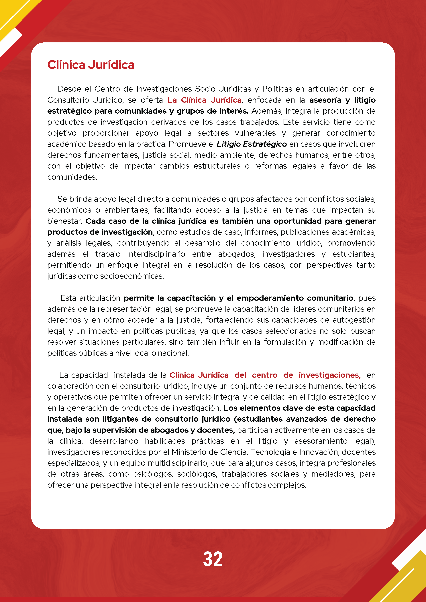
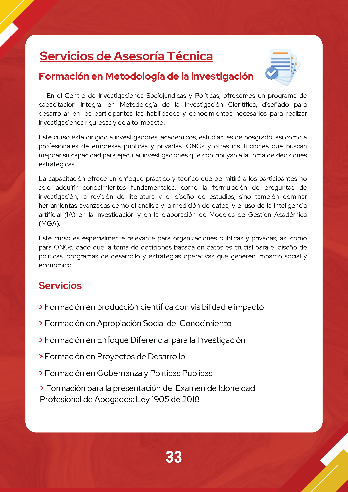
Para experimentar la lectura interactiva en 3D de nuestro portafolio de servicios, le recomendamos visitarnos desde una pantalla de escritorio.
Descargar Portafolio en PDF
Explore nuestro catálogo digital interactivo para conocer a detalle las líneas de consultoría, laboratorios y oferta formativa del CISyP o descargue el documento oficial en formato PDF.
Proyectos Destacados
¿Qué iniciativas de impacto hemos liderado?
Descubra las principales convocatorias, asistencias técnicas y proyectos de alto impacto liderados por el CISyP en articulación con entidades territoriales y organismos públicos.
Elección de Contralor Distrital de Santa Marta
Acompañamos a la mesa directiva de la corporación en las etapas y realización de la prueba de conocimientos para la convocatoria pública de elección del cargo de contralor distrital de Santa Marta (periodo 2022-2025).
Solicitar asesoría técnicaPrograma Jóvenes para el Mundo en Atlántico
Iniciativa "Jóvenes para el Mundo" facilitando el acceso a educación superior y para el trabajo mediante apoyos económicos y becas parciales, contribuyendo a proyectos de vida y cierre de brechas sociales en el Atlántico.
Conocer programas de formaciónProceso de Elección Contralor de Pereira
Prestación de servicios especializados para el desarrollo integral de las etapas del proceso de convocatoria pública y elección del contralor municipal de Pereira para la vigencia constitucional 2026 - 2029.
Solicitar consultoría especializadaSelección por Mérito Contralor del Putumayo
Acompañamiento técnico e imparcial en el proceso de selección basado en el mérito y pruebas de conocimiento para proveer el cargo de contralor departamental del Putumayo para el periodo 2026 - 2029.
Solicitar acompañamiento técnicoConvocatoria Pública Contralor de Caldas
Acompañamiento institucional y técnico con acreditación en alta calidad para adelantar la convocatoria pública y evaluación de aspirantes a contralor general del departamento de Caldas (periodo 2026-2029).
Solicitar evaluación institucionalPotencie sus iniciativas jurídicas e institucionales
Si su organización o entidad requiere asesoría técnica, consultoría sociojurídica o acompañamiento en proyectos estratégicos, contáctese con nuestro equipo de especialistas.
Solicitar AsesoríaLíneas de Investigación
¿Qué áreas de investigación lideramos?
El Centro de Investigaciones SocioJurídicas y Políticas (CISyP) del Departamento de Derecho y Ciencias Políticas lidera campos de indagación científica orientados a la producción académica de alto impacto, la transformación social y el fortalecimiento del Estado Social de Derecho.
Gobernanza, políticas públicas y desarrollo sostenible
Orientada al estudio de los procesos de formulación, implementación y evaluación de políticas públicas, la gobernanza territorial, la participación ciudadana, la gestión pública y los mecanismos de fortalecimiento institucional para el desarrollo sostenible.
Justicia, derechos humanos y transformación social
Dirigida al análisis de los sistemas de protección de derechos humanos, acceso a la justicia, grupos vulnerables, construcción de ciudadanía, cultura de paz, inclusión social y fortalecimiento del Estado Social de Derecho.
Derecho, empresa e innovación organizacional
Orientada al estudio de los fenómenos jurídicos asociados al desarrollo empresarial, la competitividad, el derecho corporativo, la responsabilidad social, la sostenibilidad organizacional y la regulación económica.
Transformación digital, inteligencia artificial y regulación tecnológica
Enfocada en el análisis jurídico y político de las tecnologías emergentes, inteligencia artificial, protección de datos, gobierno digital, ciberseguridad, evidencia digital, innovación pública y transformación digital.
Educación, cultura jurídica y apropiación social del conocimiento
Orientada al estudio de los procesos educativos, innovación pedagógica, formación jurídica, cultura ciudadana, alfabetización legal y estrategias de apropiación social del conocimiento.
Territorio, ambiente y desarrollo humano sostenible
Dirigida al estudio de los conflictos socioambientales, justicia ambiental, ordenamiento territorial, sostenibilidad, cambio climático, gestión del riesgo y protección de recursos naturales desde una perspectiva jurídica y política.
Nuestro Equipo
¿Quiénes integran el grupo de profesionales?
Conozca al equipo directivo, docente e investigador del CISyP, un grupo multidisciplinario comprometido con la excelencia académica, el rigor científico y el impacto social.
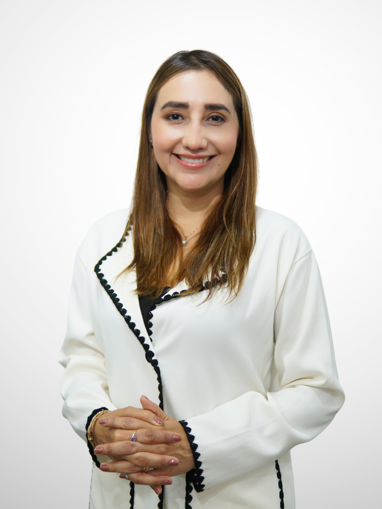
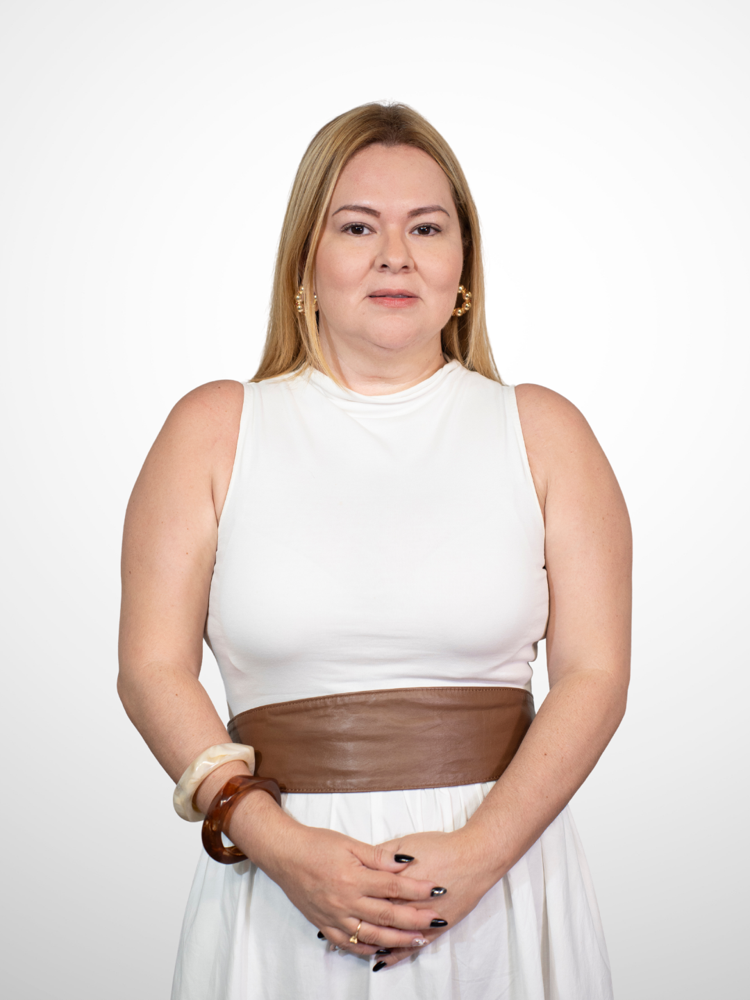
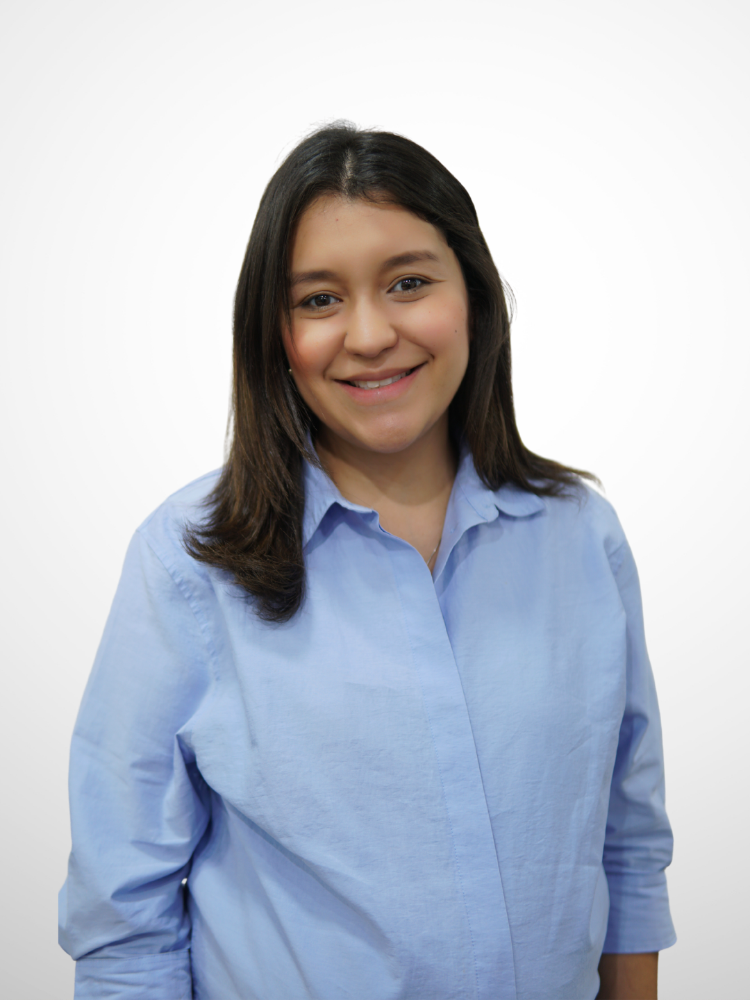
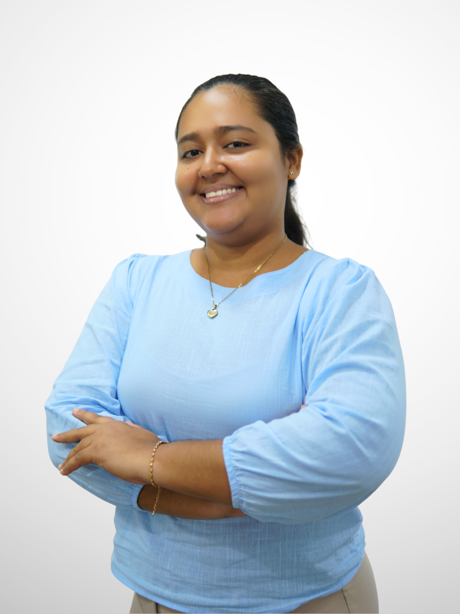
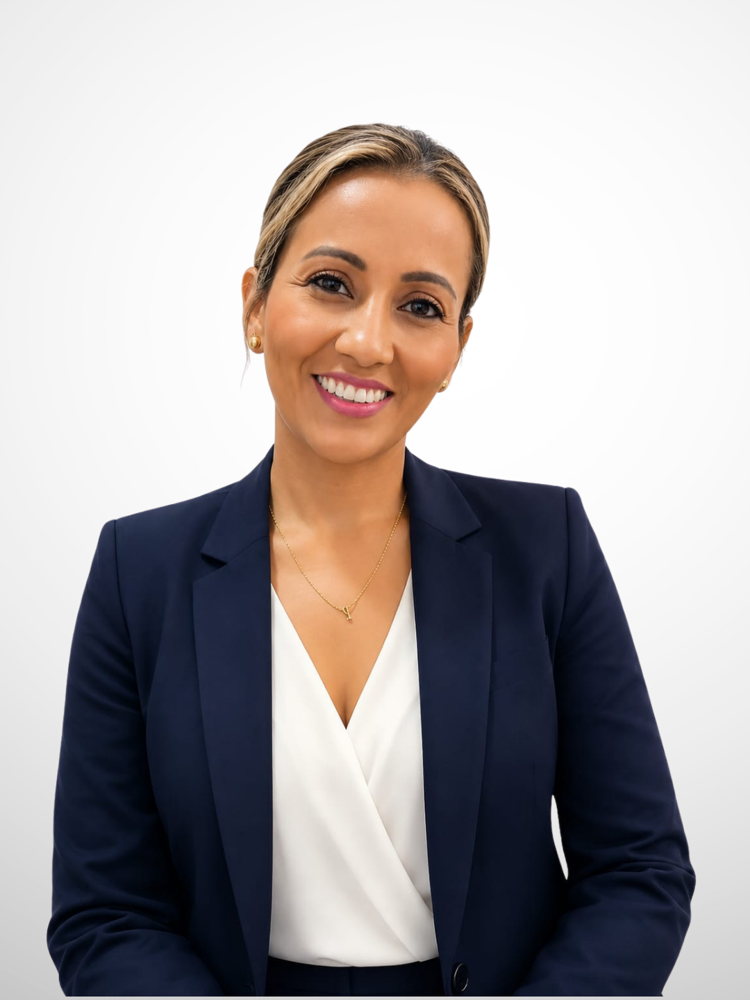
Contacto
¿Cómo podemos ayudarte a potenciar tus iniciativas?
Póngase en contacto con nuestro equipo para recibir asesoría personalizada, coordinar visitas del consultorio o establecer alianzas estratégicas universitarias.
Ubicación
Calle 58 # 55 – 66 Barranquilla, Colombia.
Bloque 7, piso 3
Horario: 8 a.m. a 12 m. y 2 p.m. a 6 p.m.
Correo electrónico
Teléfono
605 – 3225498